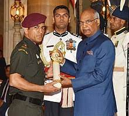

NATIONAL HONOURS
❄2018: Padma Bhushan, India's third-highest civilian award.
❄2009: Padma Shri, India's fourth-highest civilian award.
❄2007–08: Major Dhyanchand Khel Ratna award, India's highest honor given for achievement in sports
SPORTING HONOUR
❄ICC ODI Player of the Year: 2008, 2009
❄ICC World ODI XI: 2006, 2008, 2009, 2010, 2011, 2012, 2013, 2014 (captain in 2009, 2011–2020)(captain and wicketkeeper)
❄Castrol Indian Cricketer of the Year: 2011
❄ICC Men's ODI team of the decade: 2011–2020 (captain and wicketkeeper)
❄ICC Men's T20I team of the decade: 2011–2020 (captain and wicketkeeper)
❄ICC Spirit of the cricket award of the decade: 2011–2020
OTHER HOUNOURS AND AWARDS
❄MTV Youth Icon of the Year: 2006
❄LG People's Choice Award: 2013
❄Honorary doctorate degree by De Montfort University in August 2011
❄CNN-News18 Indian of the Year: 2011
❄In 2019, the Jharkhand Cricket Association named their stadium's South stand after Dhoni – M.S. DHONI PAVILION.
❄In 2023, the Mumbai Cricket Association (MCA) has decided to honour him by dedicating seats (J282–J286) at the Wankhede Stadium where he hit the winning shot in 2011 World Cup Final.